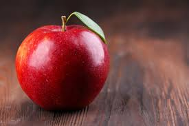
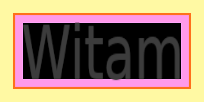
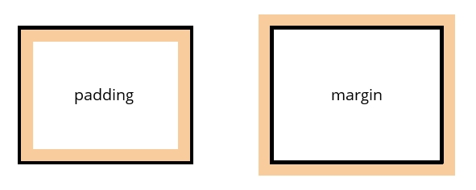

El. są umieszczane w "pudełkach". Aby określić ich wielkość, używa się width i height. (px, em, %)
(Procent względem el. nadrzędnego)
Określają min i max wymiary okna
| Owoc | Informacje | Cena |
|---|---|---|
|  | Jabłko – jadalny, kulisty owoc drzew z rodzaju jabłoń Malus. Jabłka odmian uprawnych o mieszańcowym pochodzeniu, uznawanych za gatunek jabłoń domowa Malus domestica, są istotnym komercyjnie owocem o soczystym i chrupkim miąższu. Są spożywane na surowo, a także po obróbce kulinarnej. | 2zł |
Jeśli zawartość nie mieści się w jakimś oknie to może ona zostać wyświetlona poza nim (co spowoduje niezły bałagan),
lub to małe okno może dostać przycisk scroll (wtedy będzie można przewijac zawartość)
Wartości overflow:
Jeden element w którym można określić cały wygląd obramowania. Ale można podać tylko JEDEN kolor!
Określa grubość obramowania. Zgodnie ze wskazówkami zegara, począwszy od góry.
Wartości:
Można wprowadzić inną wartość dla każdej krawędzi ramki.
Pozwala kontrolować styl obramowania.
Wartości:
Pozwala kontrolować kolor krawędzi. Analogicznie jak z grubością.
Każde pudełko elementu ma obramowanie (nawet jeśli jest niewidoczne lub ma 0 px). Obramowanie to odziela brzeg jednego pudełko od drugiego.
Margines jest obszarem znajdującym się na zewnątrz obramowania elementu. Można używac marginesu, by zwiększyć odstęp między obramowaniami dwóch sąsiadujących ze sobą elementów.
Wypełnienie to odstęp pomiędzy obramowaniem a jego zawartością. Powiększanie wypełnienia poprawia czytelność zawartości elementu.
To odstęp pomiędzy elementami. Można określić z każdej strony osobno, lub razem. Można też margin: 10px 20px; 10px - góra i dół 20px - lewa i prawa
To odstęp pomiędzy zawartością, a obramowaniem. Można określić z każdej strony osobno, lub razem. Można też padding: 10px 20px; 10px - góra i dół 20px - lewa i prawa

Aby wysrodkować zawartość na stronie należy przypisać: margin-left, margin-right : auto.
Oraz przypisać wartość width, w przeciwnym razie el. zajmie całą stronę.
El. "display" sprawi że el. blokowy zostanie zamieniowny na wewnątrzwierszwy i odwrotnie.
Wartości:
El. "visibility" decyduje czy el. zostanie wyświetlony czy nie, zawsze zostawi miejsce nawet jeśli el. nie zostanie wyświetlony. (hidden, visible)
El. "border-image" pozwala zastosować obraz jako krawędz obramowania. Dzieli podany obraz na 9 części. (kwadratów) a następnie wyświetla go jako ramkę.
W starszych przeglądarkach służą do tego właściwości:
Każdy działa tak samo jak "border-image" z CSS 3
Wł. "border-image" wymaga podania trzech informacji:
El. "box-shadow" - pozwala wyświetlić cień wokół pudełka elementu.
Pierwsza wartość to -lewa/+prawa.
Druga to -góra/+dół.
Trzecia to wartość rozmazania.
Czwarta to rozpiętość cienia.
słowo "inset" sprawia że, cień zostanie umieszczony wewnątrz pudełka.
example
Polska, Rzeczpospolita Polska (RP) – państwo unitarne w Europie Środkowej, położone między Morzem Bałtyckim na północy a Sudetami i Karpatami na południu, w przeważającej części w dorzeczu Wisły i Odry.
Za pomocą css3 można narysować kształty eliptyczne. Słuzy do tego el. "border-radius: x y" (px) x - szerokość, y - wysokość.
Można określić "border-radius" dla każdego kąta osobno lub wszystkie razem.
W tym przypadku najpierw podawane są cztery szerokości, a następnie po slashu cztery wysokości. (oddzielane spacją)